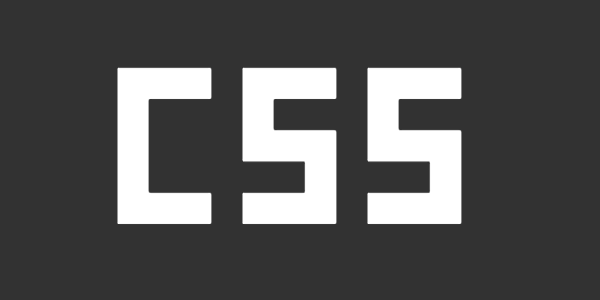

NL Design System
Ze begon door ons uit te leggen wat een design system eigenlijk is. Een design system is een systeem dat gebruikt wordt om het ontwerpproces van digitale producten zoals websites, apps en computerprogramma's efficiënter te maken.
Ze gebruiken bij NL Design System een styleguide om een consistente huisstijl aan te houden. Ook houden ze concrete richtlijnen aan voor de teksten en microcopy. Microcopy zijn eigenlijk mini teksten. Microcopy omvat alle woorden en zinnetjes in bijvoorbeeld: knoppen, formulieren, foutmeldingen en 404-pagina’s, pop-ups en cookiemeldingen. Voorbeelden van design systems in Nederland zijn: Sonama learning, ING, Bold en natuurlijk NL Design System.
“Samen met een community bouwen aan een overheidsbreed design system.”
Dat is het doel van NL Design System. Ze bereiken dit met hun community van meer dan 600 leden. Ze hebben samenwerkingen met overheidsorganisaties en hebben ook bijvoorbeeld de website gemaakt voor de Den Haag en Utrecht gemeenten. Ze maken voornamelijk gebruik van Figma voor designs en hun tech stack is Storybook met chromatic. Er is veel waar ze op moeten letten tijdens het ontwerpen en bouwen. Zo heeft elke organisatie een eigen huisstijl waar je rekening mee moet houden.
Pure CSS Animations
1900
Eerste groundbreaking animatie (The Enchanted Drawing)
1908
Eerste cartoon (Fantasmagorie)
1917
Eerste geanimeerde film (El Apóstol)
1928
Eerste Disney Cartoon (Steamboat Willie)
1958
Eerste video game (Tennis for Two)

1996
CSS

Julia begon 6 jaar geleden met CSS animaties en probeerde constant haar limits te pushen en moeilijkere dingen te maken. Na veel trial and error en nog meer oefenen lukte het haar uiteindelijk zelfs dingen met joints en bewegende lichaamsdelen te maken. Zo kon ze veel beter haar karakters vloeiende bewegingen laten maken.
Ze legde uit dat ze nu te werk gaat door de dingen als limbs, handen en joints in elkaar nest zodat ze niet meer alles apart hoeft te bewegen maar gewoon het lichaam kan bewegen en de rest beweegt mee. Zo kun je een menselijke en realistische animatie maken.
Voor de mensen die zelf ook willen gaan animeren met CSS gaf ze het advies dat je moet kijken naar wat je wilt animeren in het echt. Zo krijg je een goed idee van hoe het hoort te bewegen. Ook gaf ze voor de mensen die zelf willen beginnen een aantal goede startpunten: codepen.io/challenges, cssbattle.dev, 100dayscss.com.